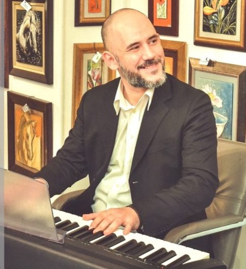

„Lecții de pian pentru acel răget din inima ta!”
Alexandru Ciobanu Al Rufei · pianist concertist, compozitor și profesor de pian în București

De ce să fiu profesorul tău?
Pentru că nu doar predau — ci mă adaptez și te ghidez!
Cu peste 25 de ani de experiență, de la scene vibrante de concert până la spații intime, aduc cu mine o pasiune pentru muzică ce merge mult dincolo de note și tehnică. Scopul meu este să te însoțesc pe propriul tău drum muzical, cu răbdare, un strop de disciplină „old-school” și o dragoste profundă pentru arta pianului.
Descoperă mai multeLecții și workshopuri
Lecții personalizate
Educație muzicală personalizatăScopul meu este simplu: să te inspir să iubești muzica la fel de mult ca mine. Lecțiile sunt adaptate nivelului și stilului tău, ajutându-te să-ți dezvolți tehnica, expresia și încrederea în sine, descoperind în același timp bucuria muzicii.
Lecții adaptate fiecărui nivel
Învață pianul, în stilul tăuFie că ești la început sau deja avansat, lecțiile mele sunt create să te sprijine la nivelul tău. Cu răbdare și pasiune, ghidez fiecare elev să își dezvolte atât tehnica, cât și expresivitatea artistică — bucurându-se pe deplin de călătoria muzicii.
Dezvoltare muzicală și artistică
Lasă creativitatea să prindă viațăMai mult decât simpla învățare a notelor, lecțiile mele se concentrează pe dezvoltarea ta muzicală și artistică. Vei dobândi creativitate, încredere și o legătură mai profundă cu muzica — descoperindu-ți propria voce unică la pian.

Note de Fildeș
Unde pasiunea și pianul se unesc
- Durată
- 1–2 ore
- Format
- la studio sau online
- Investiție
- de la 350 RON
25% reducere la lecțiile individuale și la toate planurile, cu voucherul PRIETENIIPIANULUI
Primul pas e o lecție.
La studio în București sau online, la nivelul și în ritmul tău.
Rezervă o lecție